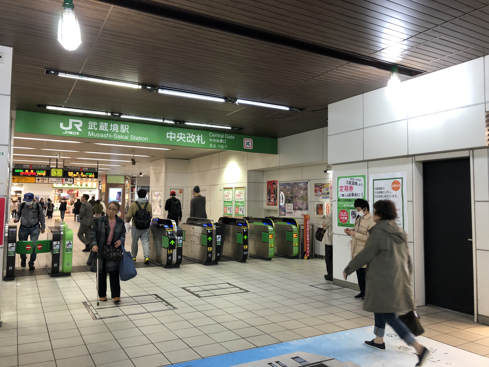

Typical station scenery
Train platform
Sendai is the biggest city in the the Tohoku Region of Japan, and it has a huge JR station. Obviously, it doesn't compare to Ikebukuro or Tokyo stations, but when you walk out, you're greeted with a lattice of sky walkways and a booming city center. With its broad streets and numerous multi-floor department stores, Sendai definitely has a big city feel.
Riding a bus to our dorm. It's 30 minutes from downtown Sendai.
I live in International House 1, where everyone is a foreign student and has a separate room. Below is a presentation of my dorm room! I think the best thing about it is that I have my own gas stove and fridge. I'm used to having two roommates, but now I have a spacious single to my lonesome self.
My friends and I met up after our respective dorm orientations to try and grab dinner. However, dinner is really hard to come by around these parts. We tried to hit up 3 or 4 different restaurants but they were all closed. It's presumably because we live in a residential area with a lot of students, and school is still on break. Finally, we stumbled upon a family restaurant that we immediately fell in love with. The restaurant owner was very welcoming and kind!
Delicious ハンバーグ (hamburger steak) from Ma-san. It was tender and juicy. The sauce was a sweet garlic soy sauce that reminds me of what my mom used to coat pork chops with. Also came with miso soup, a mouthful of spaghetti, and some potatoes. I really liked the light texture of shredded cabbage.